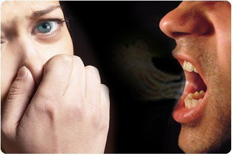

Tuve halitosis hace mucho tiempo y me avergonzaba al hablar, así que tuve que buscar algún tipo de terapia. Afortunadamente, después de 5 años de búsqueda, encontré y estuve tomándomelo cada día. Me sorprendieron mucho los efectos de esta preciada medicina.
Desilusión
Me llamo Laura, tengo 23 años y soy guía turística. Elegí este trabajo porque soy una gran fan de viajar y descubrir cosas nuevas en tierras extrañas. Es increíble cuando pisas otra tierra, respiras profundamente en una atmósfera completamente nueva, hablas con extraños y luego te haces amiga de ellos. Elegí esta profesión no solo porque quiero viajar a muchos lugares, sino también porque quiero compartir mi conocimiento con los turistas sobre los lugares en los que estuve y que me hicieron vivir una experiencia más interesante y llena de vida en lugar de cosas que había leído sobre ellos en los libros, sin importar cuánto tiempo haya estado allí.

A mi mamá nunca le había gustado mi trabajo porque quería que llevase una vida normal, que fuese una chica dócil en la vida, que eligiese un trabajo fácil, que encontrase un hombre con el que casarme y tener bebés, y que disfrutase de un ritmo de vida simple. Sé que nunca podría sentirme feliz con una vida así, por lo que aún sigo pensando que mi mamá no tenía razón sobre mi trabajo cuando dijo que cometí un error al empezar a trabajar como guía turística.
No me gusta la rutina, así que experimento cambios en mi vida con frecuencia porque los lugares nuevos me dan mucha más inspiración. Una vez, llevé a unos turistas a Westminster. Flotando en un bote en el río, algunos de ellos se quejaron de que olía un poco mal allí.
No tenía ni idea de qué olor era hasta que un turista se acercó a mí y me dijo al terminar el tour: "Espero que no se enoje conmigo, pero tiene un problema con su aliento. Cuando estaba hablando, todos tenían que contener la respiración y no querían escucharle".
Me quedé de piedra. Nadie me había dicho nada sobre ese problema y nunca había pensado que mi aliento oliese tan mal.
Después de oír eso, empecé a sentirme insegura al hablar porque temía que la gente se sintiera incómoda debido a mi aliento. Empecé a hacer tours con menos frecuencia. Incluso me volví menos amigable con los turistas y evitaba hablar sobre los lugares.
Antes de eso, hablaba con todos los turistas sin ningún problema y me hacía amiga de ellos. Después de la graduación, dejé el trabajo a pesar de que aún me encantaba viajar mucho, pero la obsesión era tan fuerte que me hizo reacia a hablar delante de las personas.
Solicité trabajo en una oficina que se dedicaba a reservar entradas para los turistas. Era un trabajo aburrido, pero al menos no tendría que hablar mucho para que la gente no notase mi mal aliento.
Lo que siempre tenía en mi bolso era chicle. Cuando hablaba con otros, mascaba chicle y lo cuidaba como si fuera mi tesoro. Sin embargo, muchas personas pensaban que no les mostraba respeto, especialmente los ancianos.
No me atreví a compartir esta carga con nadie porque me sentía avergonzada. A pesar de que prestaba mucha atención al cuidado dental y usaba clorito de sodio todos los días, no conseguí eliminar la halitosis.
Un día, leí en el periódico que los expertos aconsejaban a las personas con halitosis no comer comida con olor a pescado. Seguí ese consejo e incluso no comí carne durante meses, pero mi aliento no mejoró.
Por aquel entonces me sentía mal por haber dejado el trabajo en la oficina de turismo y por haberle dicho a mi mamá que estaba buscando otro trabajo para quedarme en casa y evitar hablar con la gente.
Después de dejar el trabajo por 2 meses, mi papá volvió a trabajar. Su vida era tan difícil que no podía quedarse con nosotras. Él sabía lo mucho que me gustaba viajar y descubrir cosas nuevas, así que pensaba que debía haber una razón por la que me quedaba en casa.
Rompí a llorar por mi vergüenza. Él se rió y me dijo que era una tonta. Me dijo que si le hubiera contado mi problema, se habría resuelto hace mucho tiempo.
No tenía ni idea de cómo iba a ayudarme hasta la mañana siguiente cuando me dio un pequeño envase de un remedio y me dijo que me lo tomara para eliminar la halitosis.
No sabía si mi halitosis se había eliminado o no, pero cuando hablaba con la gente, no veía ninguna reacción incómoda por parte de ellos. Parecía que la extraño remedio de mi papá había funcionado.
Me dijo que el producto podría acabar con mi halitosis. Sabía que esta enfermedad era causada por parásitos. Cepillarse los dientes, usar un enjuague bucal o masticar chicle eran solo soluciones temporales que nunca podrían solucionar el problema. Me dijo que después de usar este remedio, todos los parásitos de mi cuerpo se eliminarían por completo y por fin podría deshacerme de la halitosis.
También me dijo que había descubierto este método para eliminar la halitosis de un amigo japonés con quien solía trabajar. El enjuague bucal que usaba todos los días solo podría secarme la boca, pero nunca acabar con el mal olor de mi boca.
Agregó que con el uso constante de esta preciada medicina, no solo desaparecería mi halitosis, sino que también mi cuerpo se volvería sano con un fuerte sistema inmunológico.
Las tierras nuevas siempre me brindan información interesante y útil. Mi papá me ayudó a volver a mi pasión gracias a este valioso remedio. Sé que muchas personas tienen el mismo problema que yo y creo que pueden sentir vergüenza al hablar y en la vida también. Por lo tanto, quiero compartir este valioso remedio con todos y espero que puedan superar este problema como lo hice yo. Este valioso remedio es .
Si quiere deshacerse de la halitosis y tener un cuerpo tan sano como yo, busque más información y pida .
Veo que hay muchas falsificaciones en Internet, ¡así que tenga cuidado! Solo hay un único representante de .
Lorena
Hola, Laura, sufro halitosis desde hace mucho tiempo. Puedo sentir el mal olor que sale de mi garganta. He usado muchos métodos, pero ninguno de ellos ha funcionado. ¿Podría decirme si los parásitos son una de las razones que causan el mal aliento?
Laura
Hay varias causas de la halitosis, pero la principal son los parásitos. Los parásitos pueden entrar al cuerpo humano a través del agua y la comida. Comer alimentos no procesados y no lavarse las manos son causas de la aparición de parásitos en el cuerpo, lo que produce mal aliento. Hoy en día, la comida no procesada está en todas partes, y esta es la única forma de ayudar al cuerpo a escapar de los parásitos y el mal aliento.
Teresa
Laura, ¿los niños también pueden tomar este remedio? Le hago esta pregunta porque los niños tienen que enfrentarse a este problema más a menudo que los adultos.
Laura
es seguro para los niños. Está compuesto de una combinación de hierbas, por lo que es un producto 100% natural. Una amiga mía se lo dio a sus hijos y funcionó sin ningún efecto secundario :)
Ana
Este producto realmente me ha salvado. Tuve halitosis durante 7 años, pero después de haber usado durante 3 semanas, ¡superé la vergüenza y la falta de confianza en mí misma a la hora de hablar!
Samuel
Me gustaría añadir que este producto no solo elimina la halitosis, sino que también protege el cuerpo de enfermedades y mejora el sistema inmunológico.
Rosa
Me tomé para eliminar la halitosis, pero lo más importante es que se ha acabado mi alergia crónica.
Benito
Soy una de esas personas que cuida la nutrición y la salud. Siempre sigo la dieta y me preocupo por mi salud. No olvido de cepillarme los dientes, uso un enjuague bucal y mastico chicle, pero aún así de vez en cuando tengo halitosis. Estoy seguro de que son los parásitos los que causan esta enfermedad y, por supuesto, afectan a mi salud y a mi piel también. Este es el único producto que puede ayudar a deshacerse de este problema y a sentirse mejor. (Me he deshecho de la halitosis después de 7 años).
Nicolás
Gracias, Laura, por compartir esta información tan útil. No sabía qué hacer con mi problema. A pesar de haber probado tantos remeios antes, el problema seguía ahí y me hacía sentir avergonzado a la hora de hablar con la gente. No podía permitirme enamorarme de nadie. Después de leer este blog, descubrí la causa principal y encontré la forma de eliminarla con éxito. Ahora puedo hablar con confianza con cualquier persona. Muchas gracias. Por cierto, ahora tengo novia.
Laura
Realmente entiendo lo mal que se sienten las personas con halitosis y por eso he decido compartir este método con todos. Espero que siempre tengan una hermosa sonrisa y un cuerpo sano.
Andrea
Mi hermana tiene halitosis. Después de examinar el estómago, la garganta y los dientes, los doctores no encontraron problemas en esas partes. Ella usó enjuagues bucales y unos sprays raros, pero no resolvieron su problema. Le hicieron otros análisis y el resultado mostró que había parásitos en su lengua. Tomó y se deshizo de la halitosis. Está muy contenta.
Marcos
Sí, es cierto. Es una tortura hablar con personas que tienen halitosis. Deberían tomar para matar los parásitos y acabar con esa enfermedad de una vez por todas.
Carlos
¡Vaya! Es una pena que haya encontrado este artículo tan tarde. A veces, tengo mal aliento y me siento nervioso cuando hablo con mi pareja. Si es realmente tan bueno, lo probaré.
Elena
Tanto mi esposo como yo tuvimos halitosis, pero después de tomar , el problema se fue. Gracias, Laura, por haber compartido esto con nosotros.
María
Antes no tenía mal aliento, pero después del embarazo, empeoró bastante. Entonces fue cuando decidí comprar para acabar con la halitosis. ¡Fantásticos resultados!